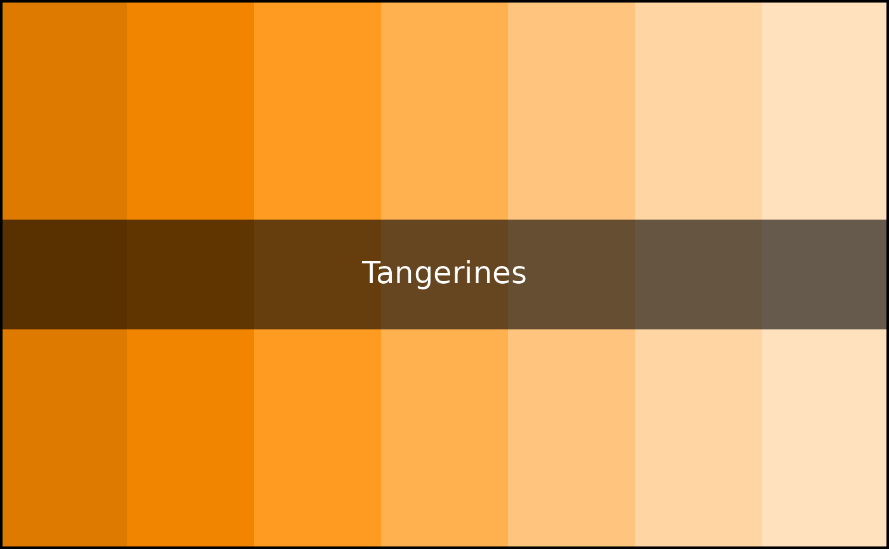
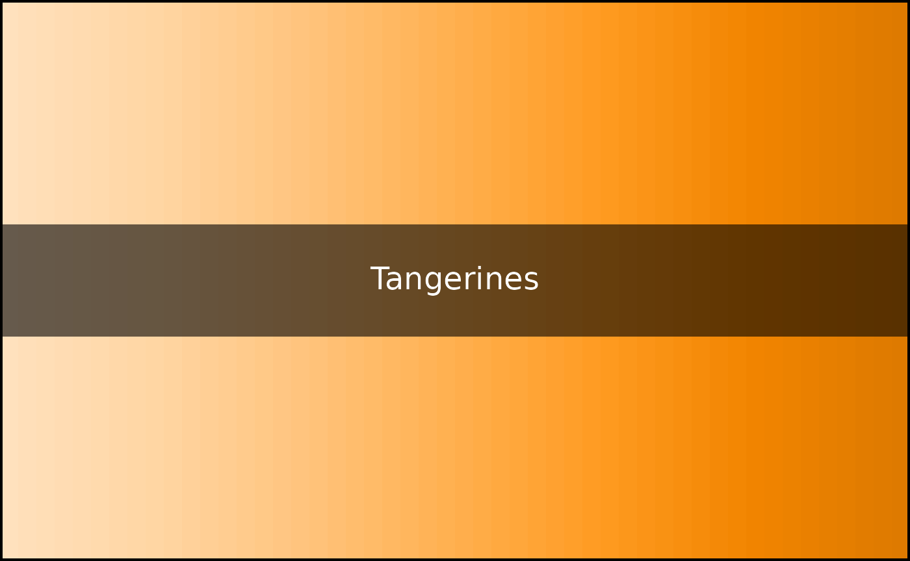
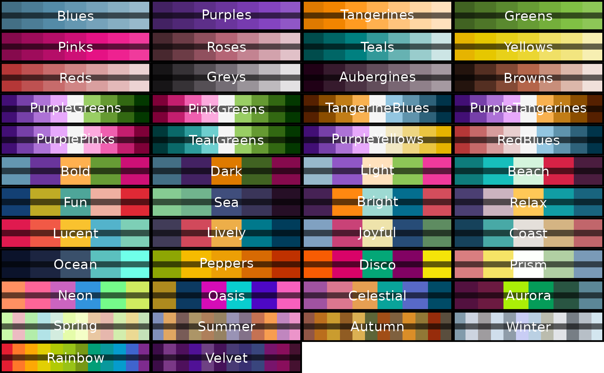
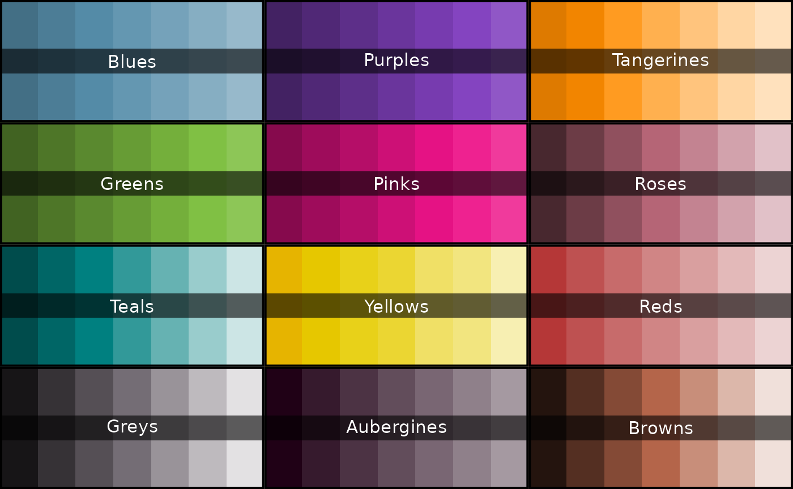

Install from CRAN using:
install.packages("PrettyCols")Or install the development version using:
remotes::install_github("nrennie/PrettyCols")Then load into R:
To see the names of all available palettes, run:
names(PrettyColsPalettes)
#> [1] "Blues" "Purples" "Tangerines" "Greens"
#> [5] "Pinks" "Roses" "Teals" "Yellows"
#> [9] "Reds" "Greys" "Aubergines" "Browns"
#> [13] "PurpleGreens" "PinkGreens" "TangerineBlues" "PurpleTangerines"
#> [17] "PurplePinks" "TealGreens" "PurpleYellows" "RedBlues"
#> [21] "Bold" "Dark" "Light" "Beach"
#> [25] "Fun" "Sea" "Bright" "Relax"
#> [29] "Lucent" "Lively" "Joyful" "Coast"
#> [33] "Ocean" "Peppers" "Disco" "Prism"
#> [37] "Neon" "Oasis" "Celestial" "Aurora"
#> [41] "Spring" "Summer" "Autumn" "Winter"
#> [45] "Rainbow" "Velvet"To see the colours in a specific palette, use the
prettycols() function:
prettycols("Tangerines")
By default a discrete palette showing all colours is displayed.
Setting type = "continuous" displays a continuous palette,
changing n changes the number of colours, and switching
direction = -1 reverses the order of colours. For
example:
prettycols("Tangerines", n = 50, type = "continuous", direction = -1)
To see all available palettes, run:

or,
view_all_palettes(type == "all")Palettes are categorised into three types:
- Sequential (
seq), - Diverging (
div), - Qualitative (
qual).
Palettes can be viewed by type. For example, to see all sequential colour palettes, run:
view_all_palettes(type = "seq")